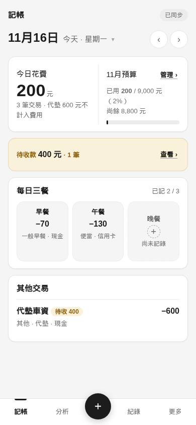
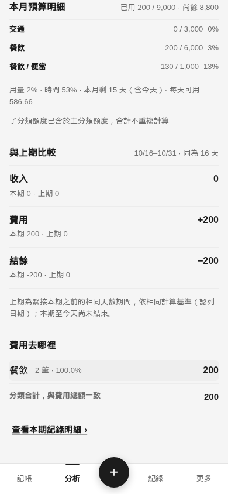
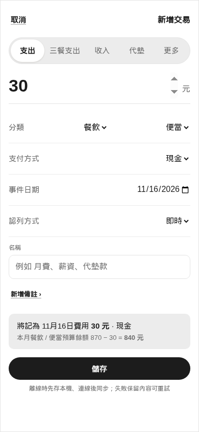

試用站目前仍是 v3.2.1，沒有動。這一頁是研究說明＋新版畫面預覽，你看過、覺得可以，我才會更新試用站。
一、這次改了什麼（對照你的回饋）
最新一輪（11/25 14:27 回饋）：刪掉了「3 筆・不計入費用」註記、「已用」標籤、「（2%）」百分比、「尚餘」列、「已記 2/3」，以及日期左右箭頭（直接點日期本身就能換日期）。總覽卡右邊現在只剩
200 / 9,000 元 和進度條。
字體多元選擇在這裡：
五種字體實際渲染比較（同一段範例文字與示意版面，回覆編號 A–E 即可）。
1. 一張卡看完今天和本月
日檢視頂部現在只有一張總覽卡：左邊是「今日花費」大數字，右邊是「11月預算」的數字（200 / 9,000 元）和進度條，右上角有「管理 ›」直達預算設定。每天可用金額、用量／時間百分比、額度計算說明這些細節全部搬到「分析」頁，不再塞在首屏。

日檢視（iPhone 尺寸截圖）：一張卡＝今日花費＋本月預算進度。下面依序是待收款、每日三餐（早／午／晚三格並排）、其他交易。
2. 細節收進「分析」頁
各分類預算列、用量／時間百分比、「子分類額度含入主分類」的說明，都集中在分析頁的「本月預算明細」區塊，計算口徑和總覽卡完全一致（重疊額度不相加、每筆支出只算一次）。

分析頁：本月預算明細（各分類列＋用量／時間＋每天可用），往下還有與上期比較、費用去哪裡。
3. 「記一筆」放到底部中間
底部列改為：記帳｜分析｜＋｜紀錄｜更多。中間黑色圓鈕向上凸出，拇指最自然的位置就是記帳入口。原本頁面中間的大按鈕在手機版拿掉（電腦版保留），頁面更乾淨。「紀錄」也從「更多」裡拉上來，常用功能不用點兩層。

點中央 ＋ 直接進入記一筆。
4. 頁面縮短：用並排取代堆疊
三餐從三條高列改成早／午／晚三格並排，總覽卡左右並排。實際量測：iPhone 常見尺寸（390×844）整頁剛好一屏放完（頁高 844、可見 844，不需捲動）；較小的螢幕（320×700）超出 144px，且最後一張卡片不會被底部列遮住。
二、參考研究怎麼做的
依你的要求參考了網路上的 UI 設計案例。實際檢視了 227 個設計圖，從中剔除 6 個不是介面設計的（3 個純 logo、1 個品牌識別集、1 個作品回顧動畫、1 個 3D 宣傳圖），剩下 221 個合格的 UI 設計案例：
| 來源 | 合格數 | 內容 |
|---|
| Dribbble（expense-tracker、budget-app 兩個標籤，重複只計一次） | 180 | 設計師的記帳／預算／金融 App 與網站概念稿 |
| Mobbin | 36 | 真實上架 App 的實際畫面（Revolut、Klarna 類） |
| design4users 精選文 | 5 | 編輯精選的財務 App 設計（另有 1 張圖壞掉不計） |
另有 261 筆來源索引清單（含標題與連結）和 221 筆檢視清單備查；Behance 因擋自動瀏覽完全打不開，沒有納入。
範圍說明：這 221 件是「看設計圖」，不是 221 次實際使用測試，我沒有操作過這些 App 的功能，結論只及於版面安排、資訊層級和視覺風格。其中 10 件另外開了全尺寸大圖確認，其餘以作品集網格的縮圖檢視。
三、觀察到的共通模式
以下是看圖後的歸納。某個做法常見只代表它流行，不代表它被證明比較好用，所以這一節只做質性描述，不下百分比。
- 底部中央大 ＋：概念稿裡反覆出現；但真實上架 App 反而少見（多把新增放右上或列表頁）。概念稿和正式產品在這點上有落差。
- 首屏一個大數字＋一個進度視覺：真實金融 App 的首屏大多只給一個重點數字加一條進度或趨勢，明細收進次級頁。
- 橫向並排：分類格、雙並卡很常見，用橫向換密度、把頁面變短。
- 預算進度：圓環和橫條都常見，少數會在橫條上加時間刻度（我們本來就是這種）。
- 配色：淺中性底＋單一強調色常見；深色金融風在展示稿裡多，真實 App 以淺色居多。
四、有正式依據的原則（和觀察分開）
- 主要操作放底部：2024 年一篇 147 人的可用性研究（Information 期刊）實測發現，「底部圖示＋文字標籤＋FAB」的導覽在效率、易學性、可用性上優於原始設計（場景是影音／資料庫類 App）。Google 官方 Material 指南也把「底部列＋置中 FAB」列為標準形態之一。
- 但也要誠實說：2019 年一篇 FAB 實驗（Future Internet 期刊）發現 FAB 跟傳統工具列相比沒有更好用，只在美觀、愉悅感上得分較高。所以中央 ＋ 不能說是「研究證明最好的做法」；採用它的真正理由是：你要求記帳入口放底部、官方支持這個形態、且有研究支持底部導覽。
- 只有觀察依據的：首屏單一重點、橫向並排、淺色中性配色，這三點來自上面的看圖歸納，沒有實驗等級的證據，如實標明。
文獻與官方指南連結：
Material FAB 指南
Material 底部列指南
FAB 實驗（2019）
導覽研究（2024）
五、整體心得
- 首屏只放一個重點最符合你的使用方式：打開就知道今天花了多少、本月還剩多少，其餘收進分析頁。
- 最常用的動作放在拇指位置：記帳是高頻動作，值得佔底部正中間。
- 頁面長度靠排列方式解決，不是靠刪資訊：三餐並排、總覽卡左右並排後，資訊一樣多但頁面短很多。
- 視覺上只留一個焦點：整頁維持中性灰，只有底部 ＋ 用最深的黑色，視線自然被帶到記帳入口。
- 概念稿和正式產品要分開看：展示稿追求好看，真實 App 追求耐用；這次兩類都看了，最終採用的都是兩邊都成立的做法。
六、限制與尚未驗證的事
- 實機測試只在 Chrome 做過（390／320／1280 寬，亮／暗模式）；iPhone 的 Safari 尚未實測，中央凸出按鈕在最底部的安全間隔是依標準寫法推定，等你確認後我會在試用站上再驗。
- 研究結論來自設計圖檢視，不是使用測試；真正好不好用，要以你在試用站上的實際手感為準。